柬埔寨自助游（1）
黑狼语录：
—— 我总希望从不同的视角来看这个世界，结果昨天又有了好多的眼屎。
从开始考虑要旅游，到决定出国，再到决定去柬埔寨，最后购买完机票，全过程就花了大概不到一个小时的时间，可见我们现在生活的方便、快捷、随意。
这次的前期准备工作依然是胡有理同志主持，能者多劳，尽管她“怨声载道”。老胡买了 2 本柬埔寨旅游的书，嘱咐我和大包子一定要细致地阅读，结果一家子 3 口人都打算在飞机上看攻略，哈哈。我买了一些药品以备不时之需，后来确实派上了用场。
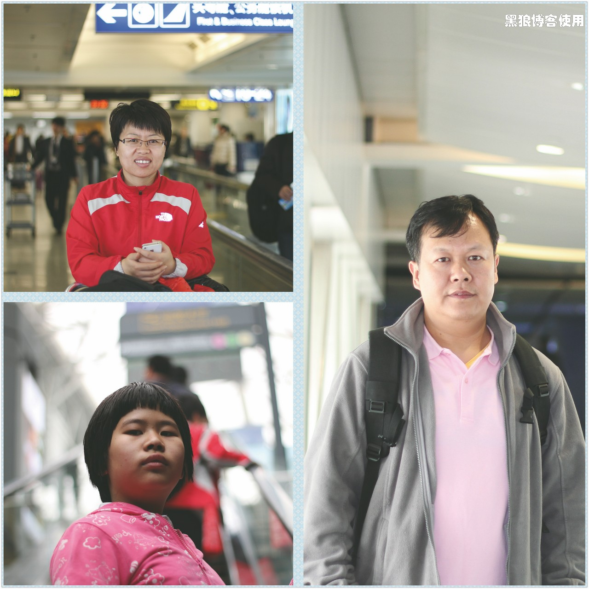飞机上可能是气压低的缘故，感觉昏昏沉沉，看了几页攻略就迷迷糊糊的睁不开眼睛。
大包子在飞机上最大的乐趣就是机上提供的饮料和快餐，一有餐车经过，眼睛亮如灯泡。
先到广州转机，最后抵达柬埔寨暹粒机场，到暹粒的时候，已经是当地时间下午 4 点多了。
暹粒机场很小，外观很有特色。
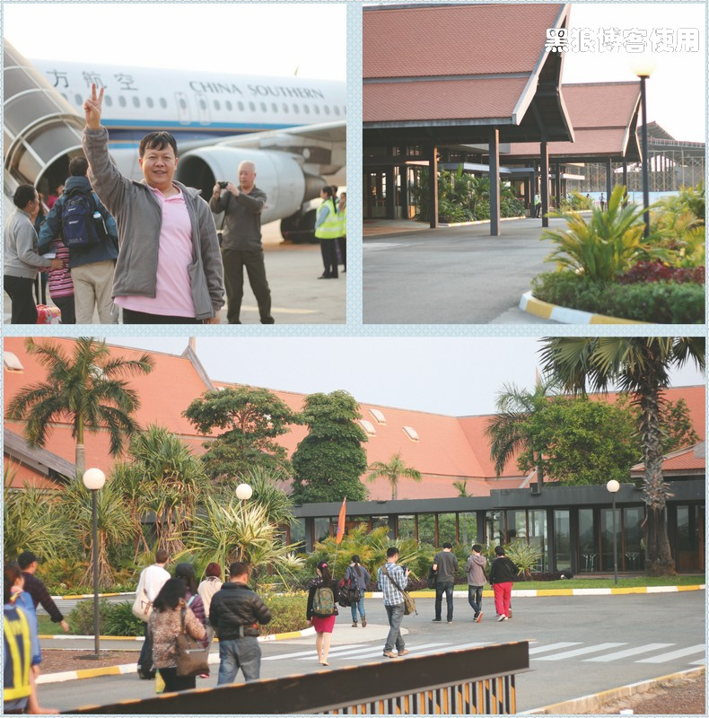在暹粒机场出关的时候，遭遇了网上提到的索要小费的情况。是因为打印好的 e-visa 网签，我把它用胶水粘到了护照上， 哎，这个动作需要海关的人员来完成，所以被索要小费。被拒入关了 2 次，咨询了 2 次服务台的官员，第 3次才被放行。公职人员收小费，就一个字：“不”，不惯他们这个毛病。
结果，等我们入关后，发现整个大厅就剩下我们 3 个人了。暹粒的机场大厅，从入关到出去乘车，就几十米的纵深，挺不适应的。更不适应的是两个行李居然少了一个，在大厅里转了几圈，居然没找到工作人员，最后终于在一个角落找到了 2 个工作人员，一查，那件行李要明天才能到，郁闷。暹粒机场大厅很小，加上签证和入关的所有工作人员估计 10 个人左右吧，没有任何的安全检查。
大概晚上7 点钟，坐着接站的突突车（tuk-tuk）到了宾馆。很温馨的一个宾馆。
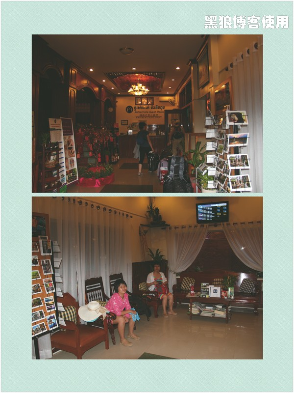办理入住的时候，恰好碰到几个国内游客在攒人包车，欣然加入。
暹粒的游玩都是围绕着吴哥（Angkor）的古迹，分为外圈、大圈、小圈，至少 3 天的行程。这些建筑是公元 9 世纪到公元 13 世纪建造的。
1 月 26 日，吴哥的第一天，我们走的是外圈，攒了 11 个人，分别住在 5个宾馆，包车一天 85 美元，居然还是个奔驰，呵呵，整个路程大概 200 公里。
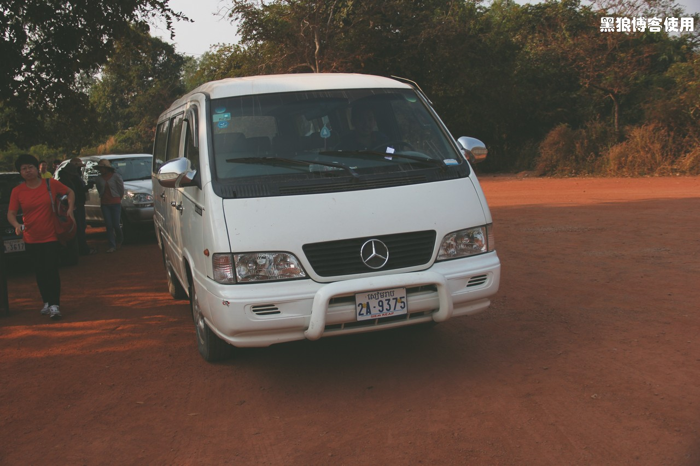一早，司机从不同的宾馆把人捡到车上，第一站女王宫。
在吴哥，穿透气的运动鞋就好，因为到处是很细的沙子。很多马路都是用红土铺成的，一开始我还以为吴哥都是红色的土地，后来发现只有马路是特意用红土铺成的，也许有什么其他的含义吧。
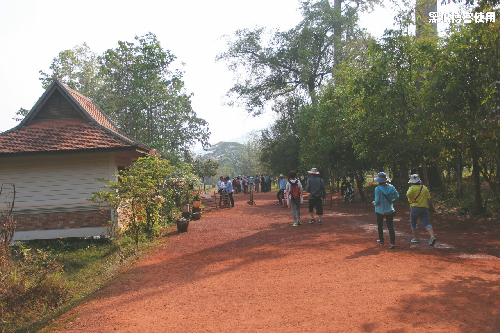女王宫的检票点非常的简单，不过，后来才知道，这已经是非常“豪华”的了，至少还有个木头门。
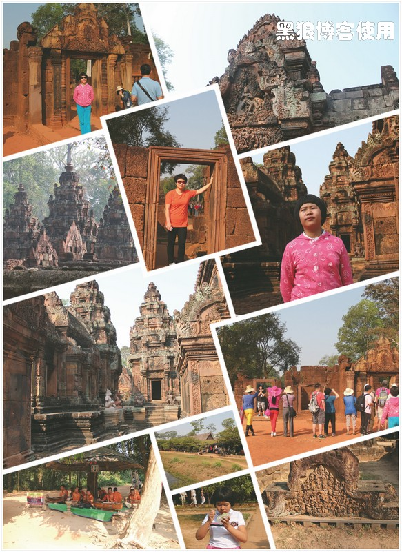女王宫建于公元 900 年 -1000 年，石头上的雕刻给人一种刻在木头上的感觉。那个年代在中国是宋朝。
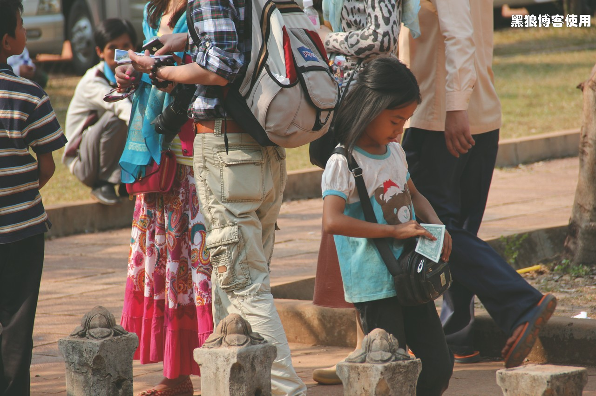小姑娘卖掉一叠明信片，收入一美金。
第二站是高布斯滨（Kbal Spean），检票处已经没有木门了。
走了 30 多分钟的原始热带雨林，才知道要去山顶看那些印度教生殖崇拜的雕像。
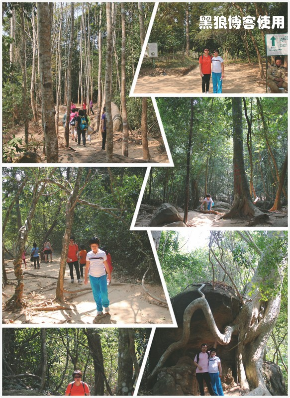路上到处是纵横交错的粗大树根，保留着原始的模样，没有修建台阶，走起路来有些吃力。但是我认为，没有台阶更能接近自然，也许再过若干年后，这里也都是台阶和水泥了吧。
第一天大部分的体力就是消耗在了这里。
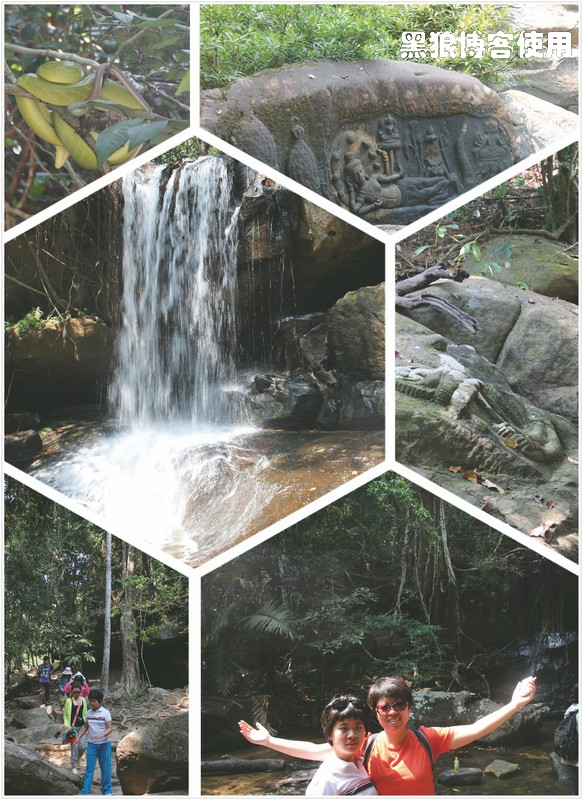我拍摄的瀑布效果还不错吧。对于雕塑，因为不懂，没有太多地关注，后来去了柬埔寨国家博物馆后，才稍稍了解了一些。
第三站崩密列（Beng Mealea），一座印度教寺庙的废墟，巨大的石块到处散落，依旧能感觉到当年的辉煌和神秘。
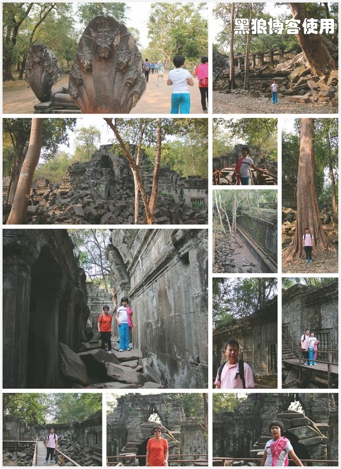从废墟的一个豁口走出来的时候，‘大包子’（10 岁那个）哆里哆嗦地走在杂乱的巨石上，一个柬埔寨小女孩主动扶着她，让我很是感动。分手 50 米后，我才想起，返回去给小女孩小费感谢一下。
最后一站是罗洛士群，好像是曾经的首都。刚一到这里，就听到洪亮的诵经声，这个遗迹的旁边有一个新建的寺庙，正有僧人在诵经。
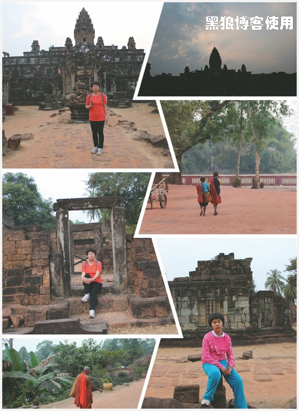游玩总是要早出晚归，尽量多玩几个地方。整个第一天，早8 点30 到晚6 点，感觉很累，主要的体力都消耗在了那座原始森林。
最后参观罗洛士群的时候，由于体力和审美疲劳双重因素，最后没有爬到寺庙的顶端。